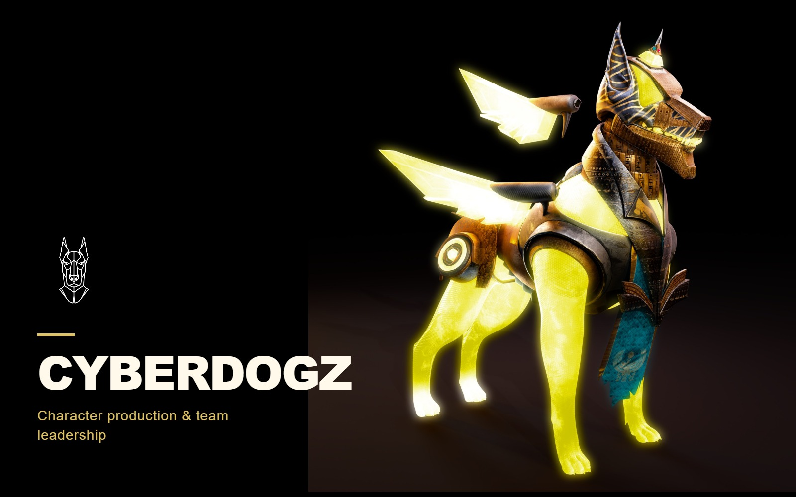

Characters
Cyberdogz
A collection of mechanical characters.

THE PROJECT
A collection of mechanical canine characters, combining hard-surface construction, sculpted forms, and dramatic material treatments.
- MY CONTRIBUTION / FOCUS
- 3D artist & team lead
Character production across sculpting, modeling, retopology, UVs, texturing, lighting, rendering, and compositing, alongside team direction and production planning.
PROCESS & DESIGN
Mechanical construction with distinct personalities.
Two personal-render collections lead the presentation: the gold character and the dark mechanical creature with teal accents. Original team-production images then show mesh structure, armor assembly, and textured variants.
Material hierarchy
Gold armor and luminous accents separate broad masses from smaller mechanical details.
Shared visual language
The dark-metal variant changes the silhouette and palette while retaining layered armor, exposed mechanics, and emissive accents.
Production evidence
The collaborative development images connect the finished look to mesh structure and textured components.
01 / Cyberdogz
Pitbull / character & armor
The pitbull is a principal character in the Cyberdogz collection. Concept art: Daeion; 3D production shown here: Oscar Anwar.
02 / Cyberdogz
Gold character
Personal-work renders: the full silhouette, armor surfaces, head, and luminous material treatment.
03 / Cyberdogz
Gold character / modeling stages
Original clay and material-blocking views recovered from my earlier portfolio.
04 / Cyberdogz
Dark metal & teal
Personal-work renders of the multi-headed mechanical character.
05 / Cyberdogz
Production & mesh studies
Original collaborative production views, including genuine wireframe images from the supplied archive. Team examples are separate from personal renders.